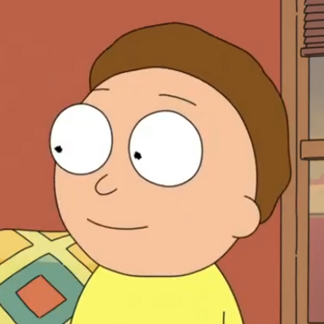
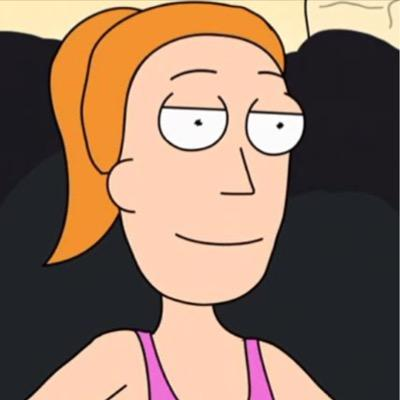
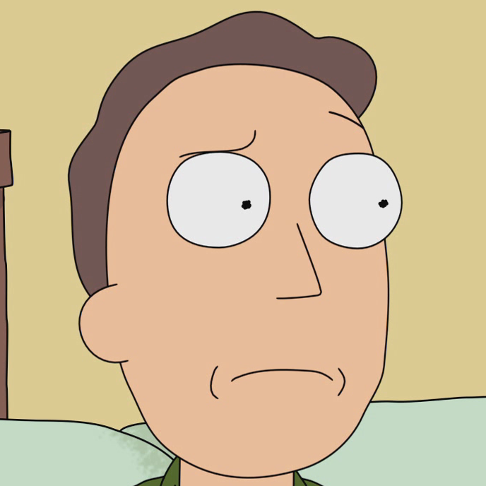
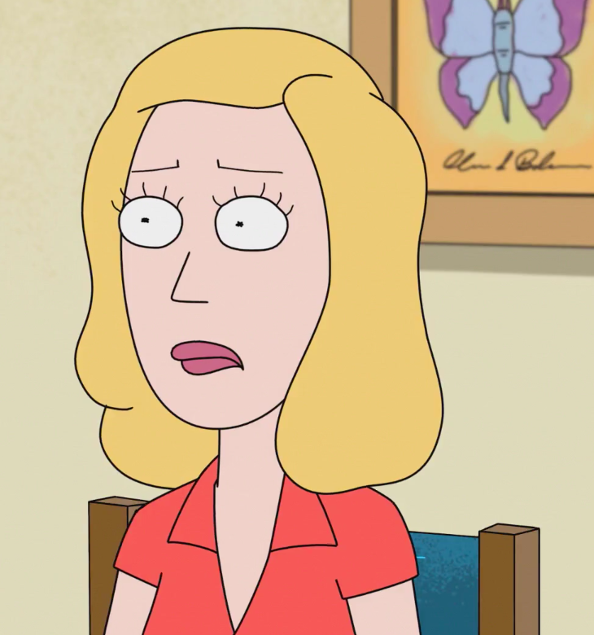
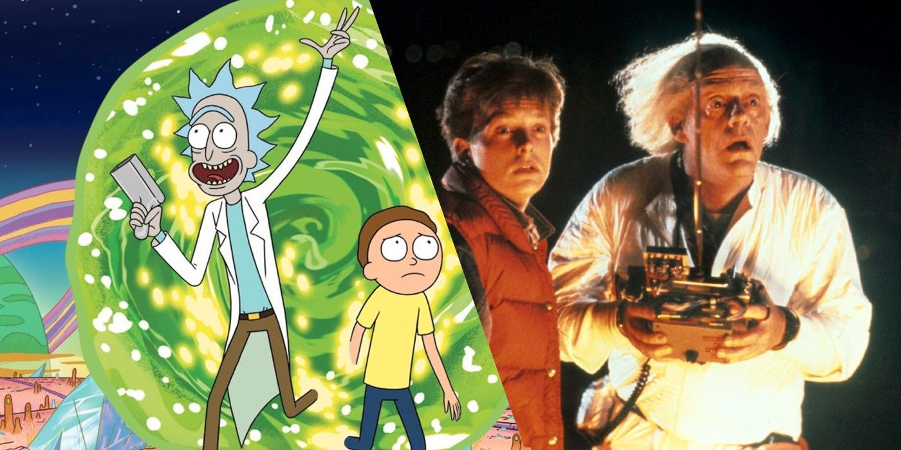

Rick a Morty je sci-fi Americký animovaný seriál po prvé vysílán 2. prosince 2013. Hlavní postavy jsou Rick Sanchez a jeho vnuk Morty Smith. Další postavy jsou Mortyho sestra Summer, máma Beth a táta Jerry.
| Postavy | vzhled | vztah | věk | hlas |
|---|---|---|---|---|
| Rick |  |
Děda Mortyho a Summer Otec Beth Tchán Jerryho |
70 let | Justin Roiland |
| Morty |  |
Vnuk Ricka Syn Jerryho a Beth Bratr Summer |
14-15 let | Justin Roiland |
| Summer |  |
Sestra Mortyho Dcera Jerryho a Beth Vnučka Ricka |
17 let | Spencer Grammer |
| Jerry |  |
Otec Mortyho a Summer Muž Beth Zeť Ricka |
35 let | Chris Parnell |
| Beth |  |
Dcera Ricka Žena Jerryho Matka Mortyho a Summer |
34 let | Sarah Chalke |
Mortyho crush
Morty z jiného vesmíru
pozdější diktátor Citadely Ricků
něco jako kočka
kamarád Ricka
nejlepší kamarád Ricka
agentka Galaktické federace
nastávající žena Ptačího muže
Kamarád rodiny Smithsů
Rickův vynález
Stvoření z krabice co splní vždy přání a zmizí

Rick a Morty vznikli původně jako parodie na film Návrat do Budoucnosti. Proto je Rick velmi podobný Doktoru Emmett Brownovi a Morty Marty McFlyovi. zajímavé je však to, že autor Ricka a Mortyho, tedy Justin Roiland do seriálu nikdy nechce dát cestování časem, kvůli náročnosti tohoto tématu.Příběh pojednává o čtyřčlenné rodině Smithů kteří si v klidu žijí, dokud je nenavštíví jejich děda Rick. Rick postupně bere jeho vnuka Mortyho na dobrodružství a Morty zjišťuje, že nejen že nejsou ve vesmíru sami, ale existuje nekonečně vesmírů.